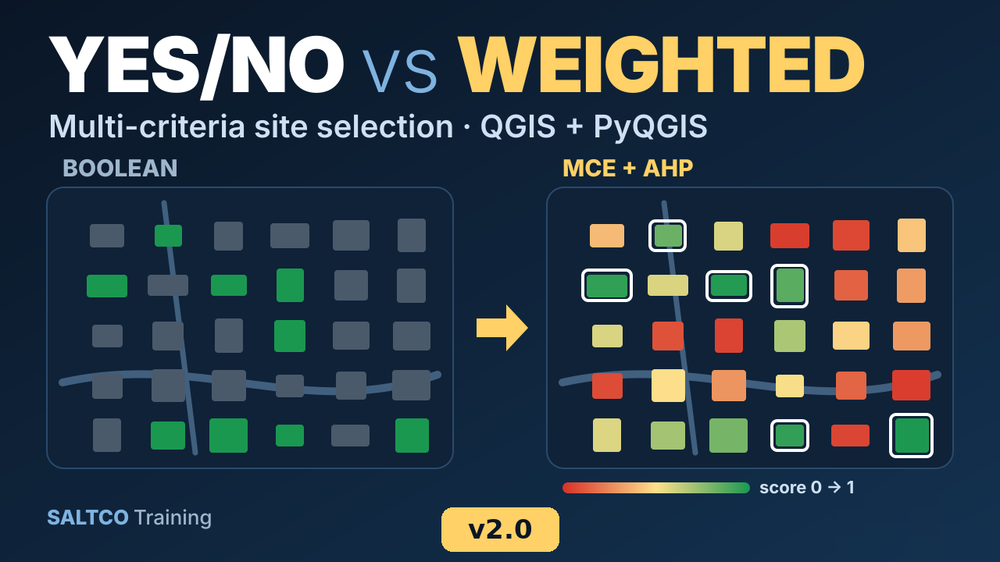
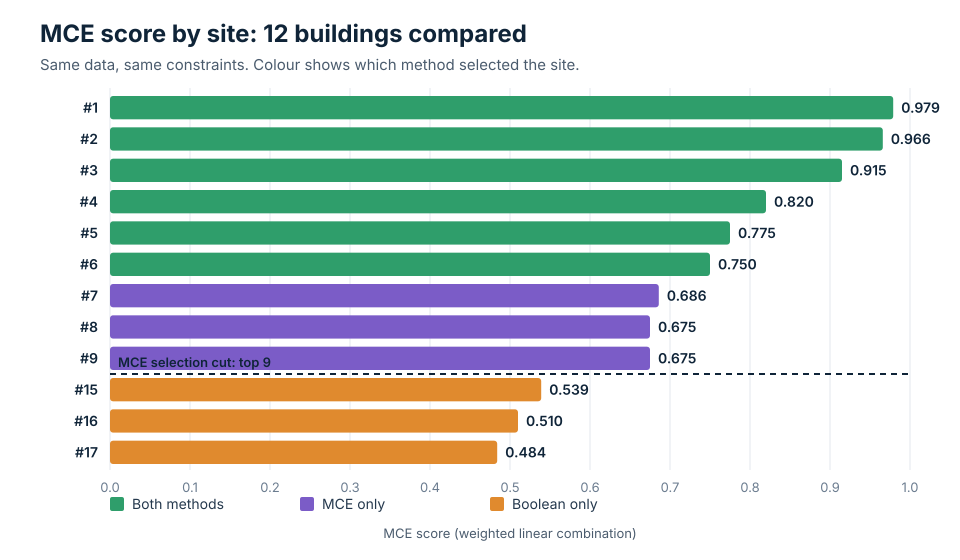

Boolean vs MCE for Site Selection: What Changes When You Rank Sites?
12 min read · QGIS 3.44 + PyQGIS · 61:20 video · Watch on YouTube · Code (v2.0.0)
Same 4,708 buildings. Same five rules. Two defensible methods picked only six sites in common — and the disagreement is the most useful part of the analysis.

Site selection is often taught as a filter: buffer, overlay, done. That works when every rule is a legal limit. It fails when the rules are preferences. This article compares Boolean screening and multi-criteria evaluation (MCE) on the same dataset, with the same five rules, and shows where the answers diverge and why.
It accompanies the second video in the QGIS + AI: Automated Site Selection series. The code is free (MIT licence), the data is open (ODbL), and every number below comes from a full run of release v2.0.0. New to buffers and overlays? Start with Week 5: Spatial Proximity & Multi-Criteria Analysis.
The 30-second answer
- Boolean screening answers “Is the site allowed?” It returns a set: yes or no. Best when every rule is a regulation, a safety minimum or a physical limit.
- MCE answers “How good is the site?” It keeps the true limits as constraints, turns the preferences into weighted 0–1 scores, and returns a ranking. Best when criteria trade off.
- On the Swellendam data: 9 Boolean sites, 22 MCE candidates, 9 selected, 6 chosen by both.
- The disagreement is not a bug. It is a policy question: is 300 m from a river a regulation or a preference?
- Make it a 300 m constraint in MCE and the two methods agree 9 out of 9.
The question, the data and the five rules
The question is deliberately ordinary: which existing buildings in Swellendam could host a new community facility? It is the kind of question a municipality, NGO or campus planner asks before a site visit. The answer depends on five rules:
| Rule | Threshold | Why it is there |
|---|---|---|
| A. Footprint area | 800–1,200 m² | The building must fit the use |
| B. Distance to a school | ≤ 1,000 m | Accessibility |
| C. Distance to a main highway | > 100 m | Safety and noise |
| D. Distance to a river | > 300 m | Flood risk |
| E. Urban area | Footprint intersects an urban polygon | Development context |
The data is the QGIS Training Manual exercise dataset for Swellendam, South Africa: 4,708 building footprints, 4 schools, 716 road segments (74 of them main highways), 6 river features and 3 urban polygons, © OpenStreetMap contributors (ODbL). Everything is reprojected to EPSG:32734 (WGS 84 / UTM 34S), so areas and distances are planar metres.
Four assumptions matter more than the software:
- Footprints, not parcels. The candidates are building footprints. A selected footprint is never cut, and the analysis cannot tell you whether the land is vacant or developable.
- Urban is not zoning. The urban polygons are cadastral/erf-derived. They show urban context, not permitted land use.
- Distances are measured from the footprint edge, not the centroid. A building touching a road has distance 0.
- OSM is a snapshot. A missing school, road or river changes the answer. The data is not ground truth.
Boolean screening: clarity, and the knife edge
Boolean screening applies every rule as a hard yes/no and keeps only the buildings that pass all of them. The cascade is brutally effective:
4,708 buildings → 27 (area) → 21 (school) → 20 (highway) → 9 (river) → 9 (urban).
The river rule does most of the work: it removes 11 of the 20 remaining candidates. That is the first clue about what will happen later.
The strength of this method is that you can defend every rejection. A building is out because it is 780 m², or 1,040 m from a school, or 270 m from a river. There is no hidden weighting, no model to explain, no score to argue about. For a statutory setback or a safety minimum, that is exactly what you want.
The weakness appears at the boundary. Building 194655366 is 270 m from the river. The rule says 300 m. It fails by 30 m, even though it is 407 m from a school and 809 m from a highway. Another building that fails every rule badly is treated the same way: rejected. And the nine survivors are all equally “yes”. There is no way to say that one is a better candidate than another.
The knife-edge problem. A threshold turns a continuous measurement into a binary decision. That is useful for a regulation and dangerous for a preference. The question is not “which side of 300 m is it?” but “why is 300 m the line?”
MCE: separating “allowed” from “good”
Multi-criteria evaluation starts by splitting the rules into two kinds.
Constraints are the true limits: is the building allowed at all? They stay yes/no. In this project: area 800–1,200 m², urban area, a 100 m river setback for flood safety, and a 25 m highway setback for road safety. The cascade is 27 → 25 → 22 → 22.
Factors are the preferences: how good is the site? They become a score from 0 to 1. Closer to a school is better; farther from a highway or river is better.
| Rule | Boolean treatment | MCE treatment | MCE values |
|---|---|---|---|
| Area | 800–1,200 m² | Constraint | 800–1,200 m² |
| Urban area | Intersects | Constraint | Intersects |
| River | > 300 m | Constraint + factor | Setback 100 m; score 0 at 100 m, 1 at 1,000 m |
| Highway | > 100 m | Constraint + factor | Setback 25 m; score 0 at 25 m, 1 at 500 m |
| School | ≤ 1,000 m | Factor only | Score 1 at 0 m, 0 at 1,500 m |
The setbacks are smaller than the Boolean distances on purpose. The setback is the safety minimum; everything beyond it is a preference, and the factor scores it. The school factor also has a wider range than the Boolean rule: a building at 1,060 m is no longer thrown out; it scores 0.29.
Turning distances into 0–1 scores
Each factor uses linear membership:
score = (distance − zero_at_m) / (one_at_m − zero_at_m), clamped between 0 and 1.
Worked example, building 195565002:
- School: 0 m → 1.000
- Highway: 187 m → (187 − 25) / 475 = 0.341
- River: 132 m → (132 − 100) / 900 = 0.036
With the weights below, its total score is 0.675 — exactly what the dashboard shows.
Weights with AHP
Which factor matters most? Instead of guessing percentages, the Analytic Hierarchy Process (AHP) asks easier questions, two factors at a time, on Saaty's 1–9 scale:
| Criterion | School | Highway | River |
|---|---|---|---|
| School | 1 | 3 | 3 |
| Highway | 1/3 | 1 | 1 |
| River | 1/3 | 1 | 1 |
School is moderately more important than highway (3) and than river (3); highway and river are equally important (1). The derived weights are school 0.60, highway 0.20, river 0.20, with a consistency ratio of 0.00.
A consistency ratio below 0.10 is acceptable. Ours is 0.00 because the judgements are perfectly transitive: 3, 3 and 1 cannot contradict each other. That is a coherence check, not evidence that the weights are right. The weights are a decision. Agree on them with the people who will use the result.
Score, rank, select, stress-test
The weighted linear combination is simply:
mce_score = 0.60 × school + 0.20 × highway + 0.20 × river
All 22 eligible buildings are scored and ranked. The top 9 are selected — the same number as the Boolean result, so the comparison is fair. The selection is a deliberate choice (match_boolean), not a natural break in the scores: rank 9 scores 0.675 and rank 10 scores 0.644.
The script then tests the weights. Each weight is raised and lowered by 20%, six scenarios in total, and the sites are re-selected. Five scenarios keep all nine sites; only “school −20%” swaps one. The mean stability is 0.981. The site that drops out, rank 9, has a stability of 0.833. It sits on the cut-off, which is exactly the site to discuss with decision-makers.
The comparison: 6 / 3 / 3
Put the two results side by side and the disagreement is small but meaningful:
| Agreement | Sites | What it means |
|---|---|---|
| Both | 6 | Pass every Boolean rule and rank 1–6 in MCE. The strongest candidates. |
| MCE only | 3 | Fail the Boolean 300 m river rule; ranks 7–9 in MCE. Rivers: 132 m, 173 m, 270 m. |
| Boolean only | 3 | Pass every rule but rank 15–17 in MCE: two are 863 m and 933 m from a school; one is 138 m from a highway. |

The six consensus sites are robust. They pass every rule and rank high, and they stay selected under every ±20% weight scenario. If you need one shortlist to take to a meeting, start there.
The three MCE-only sites are the interesting ones. All three fail only the Boolean river rule: 132 m, 173 m and 270 m from a river. One is next to a school (0 m); the other two are 326 m and 407 m away. All three are at least 187 m from a highway. MCE keeps them because the 100 m flood setback is the constraint and the distance beyond it is a preference.
The three Boolean-only sites pass every rule but rank 15–17 in MCE. Two are far from a school (863 m and 933 m, school scores 0.42 and 0.38); one is close to a highway (138 m, highway score 0.24). They are legal, but they are not the best options once access and noise are weighted.
Why the methods disagree
The disagreement is created by the river threshold. It is amplified by the school weight.
The threshold. Boolean says 300 m is the line. MCE says 100 m is the legal minimum and everything beyond it is a score. The three MCE-only sites sit in that gap. If 300 m is a regulation, they should be excluded. If it is a preference, excluding them is arbitrary.
The weight. School carries 0.60 of the MCE score. The three MCE-only sites are 0 m, 326 m and 407 m from a school; the three Boolean-only sites are 475 m, 863 m and 933 m. That is why the river-near sites can rank above buildings that pass every Boolean rule.
The question to ask in the meeting: “Is 300 m from a river a regulation or a preference?” If it is a regulation, make it a constraint. If it is a preference, say so — and accept that the ranking will keep sites between 100 m and 300 m.
What if you change the rules?
This is where the method earns its keep. Because every rule lives in config.json, you can test the decision instead of defending a screenshot. These results come from the v2.0.0 criteria matrix; change one value, re-run, and compare.
| Change | Boolean sites | Both / MCE only / Boolean only | Stability |
|---|---|---|---|
| Baseline | 9 | 6 / 3 / 3 | 0.981 |
| Boolean river rule 300 → 200 m | 13 | 9 / 4 / 4 | 0.949 |
| Boolean river rule 300 → 100 m | 17 | 16 / 1 / 1 | 0.980 |
| Boolean river rule 300 → 500 m | 3 | 3 / 0 / 0 | 1.000 |
| School rule 1,000 → 1,200 m | 9 | 6 / 3 / 3 | 0.981 |
| MCE river setback 100 → 300 m | 9 | 9 / 0 / 0 | 1.000 |
| AHP highway/river 1 → 3 | 9 | 6 / 3 / 3 (one swap) | 0.963 |
| MCE selects top 12 instead of 9 | 9 | 6 / 6 / 3 | 0.972 |
Three lessons:
- The river rule is the decisive rule in this town. Relax it to 200 m and the Boolean answer grows from 9 to 13. Tighten it to 500 m and it falls to 3.
- Not every rule is binding. Loosening the school rule from 1,000 m to 1,200 m adds a candidate at step B, but the final result stays 9: the extra building fails the river rule.
- Make the river a regulation in both methods and they agree completely. With a 300 m MCE setback, 10 buildings remain eligible and the top 9 are exactly the Boolean 9. The disagreement was never about the maths; it was about the status of the threshold.
Changing the AHP judgement highway/river from 1 to 3 produces weights 0.584 / 0.281 / 0.135 and a consistency ratio of 0.117 — above the 0.10 threshold. The script still runs, but it warns you: the judgements contradict each other (school is 3 × highway, school is 3 × river, yet highway is 3 × river). That is AHP doing its job.
Boolean vs MCE: side by side
| Question | Boolean screening | MCE (WLC + AHP) |
|---|---|---|
| What it answers | Is the site allowed? | How good is the site, relative to the others? |
| Output | A set of feasible sites | A ranked shortlist, with scores |
| Handles trade-offs | No. Every rule counts the same. | Yes. A strong factor can compensate a weak one. |
| Near-misses | Rejected, however good the other criteria | Scored; may still rank high |
| Transparency | Very high: one rule, one rejection reason | High, but the weights and factor ranges must be explained |
| Stakeholder role | Agree on the rules | Agree on the rules and the weights |
| Typical use | Statutory setbacks, safety minima, eligibility | Shortlisting, prioritisation, participatory decisions |
| Main failure mode | Arbitrary thresholds and no ranking | Weights treated as truth; compensation hides a fatal weakness |
How to choose
Ask five questions:
- Is the threshold a law, a safety minimum or a physical limit? If yes, it is a constraint. Use Boolean for that rule, or put it in the MCE constraint set.
- Do the criteria trade off? If a site can be a little farther from a school and still be better because it is far from a highway, you need MCE.
- Do you need a ranking or just eligibility? If the answer is “these are the eligible sites”, Boolean is enough. If it is “which three should we visit first?”, you need a ranking.
- Can stakeholders agree on weights? If not, use Boolean for the hard rules and present the MCE ranking as a sensitivity-tested scenario, not a verdict.
- Do you need to defend a rejection? Boolean gives you a one-line reason. MCE gives you a score, which is more nuanced but easier to dispute.
The hybrid workflow I recommend:
- Codify the legal and safety limits as constraints.
- Turn the preferences into factors with defensible ranges.
- Elicit weights with the people who will use the result; check the consistency ratio.
- Score, rank and select.
- Stress-test the thresholds and the weights.
- Compare with the Boolean result and investigate every disagreement.
- Publish the decision record: rules, ranges, weights, CR, sensitivity and data caveats.
Use Boolean when every rule is a regulation. Use MCE when the criteria are preferences. Use both when the decision matters: the consensus set is your shortlist, and the disagreements are your agenda.
Common mistakes
- Turning a preference into a regulation. A 300 m river buffer may be a policy choice, not a legal limit. If you make it a constraint, say why.
- Forgetting that thresholds are values. “100 m from a highway” is a decision about noise and safety, not a fact of nature.
- Choosing factor ranges arbitrarily. The school factor's 1,500 m range determines the scores as much as the 0.60 weight does.
- Reading the consistency ratio as truth. CR ≤ 0.10 means the judgements are coherent, not correct. A perfectly consistent matrix can still encode bad priorities.
- Forcing a top-N cut. Selecting 9 because Boolean found 9 is useful for comparison, but it is not a natural break. In a real decision, use a score threshold, a budget or a natural gap — and say which.
- Ignoring spatial redundancy. Nine buildings are not nine independent sites. In this run, ranks 7 and 8 are 92 m apart; ranks 4 and 5 are 147 m; ranks 6 and 8 are 143 m. A shortlist should consider whether neighbouring buildings are one opportunity or several.
- Treating footprints as parcels, or urban polygons as zoning. The analysis tells you about buildings and context, not land ownership or permitted use.
- Not documenting the decision. A map without the rules, weights, CR and sensitivity is not reproducible. The value is in the record, not the screenshot.
Reproduce it
The full workflow is free and open source: QGIS 3.44.16 (the scripts are also tested on QGIS 3.40 LTR), PyQGIS, Python 3 and folium. It runs offline once the data is downloaded.
git clone https://github.com/saltcotraining-geoai/qgis-ai-site-selection
cd qgis-ai-site-selection
python3 -m pip install folium
# Phase 0 → 1 → 2 → 2b → 3
python3 demo.py
# Boolean only (as in Part 1)
python3 demo.py --skip-mceThe settings live in config.json. The MCE section looks like this:
"mce": {
"constraints": {
"area": { "enabled": true, "min_sqm": 800, "max_sqm": 1200 },
"urban": { "enabled": true, "relation": "intersects" },
"river_setback": { "enabled": true, "distance_m": 100 },
"highway_setback": { "enabled": true, "distance_m": 25 }
},
"factors": {
"school": { "zero_at_m": 1500, "one_at_m": 0 },
"highway": { "zero_at_m": 25, "one_at_m": 500 },
"river": { "zero_at_m": 100, "one_at_m": 1000 }
},
"weights": {
"method": "ahp",
"ahp_pairwise": {
"school/highway": 3,
"school/river": 3,
"highway/river": 1
}
},
"selection": { "method": "match_boolean" },
"sensitivity": { "enabled": true, "weight_change": 0.2 }
}Expected output: Boolean 27 → 21 → 20 → 9 → 9; MCE constraints 27 → 25 → 22 → 22; weights 0.60 / 0.20 / 0.20; CR 0.000; 22 scored; 9 selected; agreement 6 / 3 / 3; mean stability 0.981.
Download release v2.0.0 · Repository and README
FAQ
Is MCE better than Boolean screening?
No. They answer different questions. Boolean is better when every rule is a regulation and you need an auditable yes/no. MCE is better when criteria are preferences and you need a ranking. The mistake is using one for the other's job.
What is AHP, in one paragraph?
The Analytic Hierarchy Process derives weights from pairwise comparisons on a 1–9 scale. Instead of asking “what percentage should school get?”, it asks “is school more important than highway, and by how much?”. It also computes a consistency ratio, which flags contradictory judgements.
What consistency ratio is acceptable?
CR ≤ 0.10 is the usual threshold for a 3 × 3 matrix. Our default is 0.00 because the judgements are perfectly transitive. A good CR means the judgements are coherent, not that they are right.
Why nine sites?
Because the Boolean result has nine, and the comparison is fair only if both methods select the same number. It is not a natural break: rank 9 scores 0.675, rank 10 scores 0.644. In a real project, choose the cut for a reason (budget, score threshold, natural gap) and document it.
Can I use this for my own town?
Yes. You need five layers — buildings, schools, roads, rivers and an urban area — in any CRS, plus your own rules. Phase 0 finds the local UTM zone and reprojects everything. Map your layer and field names in config.json, then run the demo.
Is this an AI model?
No. The analysis is deterministic PyQGIS: buffers, overlays, distances, weighted linear combination and AHP. The “QGIS + AI” series covers AI-assisted workflows separately. No machine-learning model makes the decision.
What about rasters?
That is the next video: the same site-selection logic with a population raster and a DEM. The vector workflow here is the foundation; the raster version adds continuous surfaces and a different set of constraints.
The method is not the analysis
Boolean screening and MCE are both defensible. The difference is what they make visible. Boolean makes the rule visible. MCE makes the trade-off visible. Neither makes the values disappear.
The most useful output of this comparison is not the six consensus sites. It is the question the three MCE-only sites force: is 300 m from a river a regulation or a preference? Answer that, and the method follows.
Watch the full session
The 61-minute video walks through the slides, the AHP matrix, the PyQGIS pipeline, the dashboard and the criteria matrix. Jump straight to a section:
- 04:16 MCE and AHP in plain language
- 13:24 Constraints vs factors
- 17:42 AHP pairwise comparisons
- 24:48 The consistency ratio
- 29:12 Sensitivity check
- 29:38 Boolean vs MCE: 6 / 3 / 3
- 39:42 Running the PyQGIS pipeline
- 54:03 Dashboard: Boolean vs MCE
- 60:00 AHP Excel template
▶ QGIS + AI: Automated Site Selection v2 — Boolean vs MCE (AHP)
Part 1: Boolean screening, automated · More free GIS training at saltco.org
Data: QGIS Training Manual exercise data (Swellendam, South Africa), © OpenStreetMap contributors, ODbL. Code: MIT licence. The analysis was run with QGIS 3.44.16; the scripts are also tested on QGIS 3.40 LTR.
About the author
Sallah · SALTCO Training. I teach practical, open-source geospatial analysis and publish the code with every session, so you can reproduce the result and challenge it. More at saltco.org and YouTube @saltcoTraining.